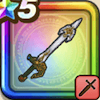

天空のつるぎ
攻略班 8.0点 / かえん斬り渾身斬りミラクルソード超ぶんまわしビッグバンソード※錬成で強化可能
くわしい特徴
【レベル別習得スキル】 Lv1ギガデーモンへのダメージ+30% Lv1かえん斬り（消費MP：3）敵1体に威力130%のメラ属性斬撃ダメージを与える Lv10渾身斬り（消費MP：7）頭上から切りつけ敵1体に威力180%の斬撃ダメージを与える Lv15ミラクルソード（消費MP：13）敵1体に200％の無属性斬撃ダメージを与え、与えたダメージの20％を自身のHPとして回復する。 Lv20超ぶんまわし（消費MP：15）振り回した渾身の剣で敵全体に威力170%の斬撃ダメージを与える Lv30ビッグバンソード（消費MP：19）炎のちからを爆発させ敵1体に威力330%のメラ属性斬撃ダメージを与える Lv35究極エビルプリーストへのダメージ+30% Lv40さいだいMP+12 Lv45攻撃時+2%の確率で眠りを与える Lv50攻撃力+12錬成スキル改1けもの系へのダメージ+20%改2ビッグバンソード改（消費MP：29）炎の力を爆発させ、敵1体に威力410％のメラ属性斬撃ダメージを与える改3火炎ぶんまわし（消費MP：25）振りまわした炎の剣で、敵全体に威力220％のメラ属性斬撃ダメージを与える改4錬成ぶき特別演出解放・メガモン討伐結果発表時に特別演出が追加・武器の見た目に特別なエフェクトが追加改5ビッグバンソード改のダメージ+2%改6ビッグバンソード改のダメージ+2%改7ビッグバンソード改のダメージ+3%改8ビッグバンソード改のダメージ+3%改9ビッグバンソード改のダメージ+4%改10いきなりまもりのたて（消費MP：武器毎に異なる）戦闘開始時に悪い状態変化とすべての状態異常をふせぐ加護が自動で宿る(効果ターンは武器毎に異なる)改11ビッグバンソード改のダメージ+10%改12勇者のはどう（消費MP：最大MPの25%）戦闘中自身が会心の一撃を3回発生させると敵全体の強化効果を一部を除き全て解除する改13ビッグバンソード改のダメージ+15%改14ビッグバンソード改のダメージ+20% 【限界突破スキル】 1凸スキルの斬撃・体技ダメージ+5% 2凸スキルの斬撃・体技ダメージ+5% 3凸スキルの斬撃・体技ダメージ+5% 4凸スキルの斬撃・体技ダメージ+5%